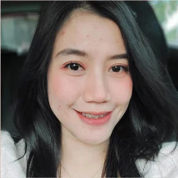
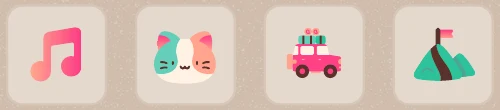

Mobile UI/UX
2021–2023
PERSIS App
Led the UI design of the PERSIS Solo fan app, now at 100K+ downloads. Match ticketing is its core feature, shaped by feedback from fans, and it helped move ticket sales off physical booths.
Graphic and visual content designer from Surakarta, Indonesia, with nearly 7 years across print, social media, editorial layout and UI.
Led the UI design of the PERSIS Solo fan app, now at 100K+ downloads. Match ticketing is its core feature, shaped by feedback from fans, and it helped move ticket sales off physical booths.
The club site at persissolo.id: news, next-match countdown, player profiles, PERSIS TV and the merchandise store.
Instagram feed for a cake shop in Solo, built around bright product photography and a consistent post frame.
Posts for the Central Java election commission around Pilgub Jateng 2024: debate announcements, plenary sessions and vote results.
Event posters for a children's photography workshop and a campus festival.
Catalogue for a two-artist painting exhibition, pairing full-bleed artwork with artist biographies.
Book layout for Petrokimia Gresik, made at Solopos Media Group, mixing long-form features with product pages.
Character portraits for pillows and a cat graphic for a T-shirt.
Street billboard for the digital platform of Solopos Media Group.
Logo and hang tags for a small local bag label.

Hi, I’m Afni
Graphic Designer · Visual & Content Designer
Graphic and visual content designer with nearly 7 years of experience across a creative agency, a daily newspaper, a professional football club, and hospitality and F&B brands.
I create print and digital promotional materials, editorial layouts and social media content, supported by hands-on photography and video editing. I also led the UI design of the PERSIS Solo fan app, which has reached 100K+ downloads.
